Forces Frozen
This workshop was taught by Lancelot Coar of the University of Manitoba and Caitlin Mueller of MIT. We started by learning about the work that has been done in constructing huge, dome-like structures out of relatively thin shells. We learned about catenaries, the curve that an ideal chain would assume when supported at only its ends. We learned about tension and compression in those curvatures. We learned about composites and about how ice can be structural.
But MIT is all about doing! On a particularly cold day, we took thin sheets and used rope and other materials to suspend them from fixed structures, like hula hoops. Then we took them outside and sprayed water over them, allowing the wet cloth to slowly freeze. (We got a little frozen ourselves...)
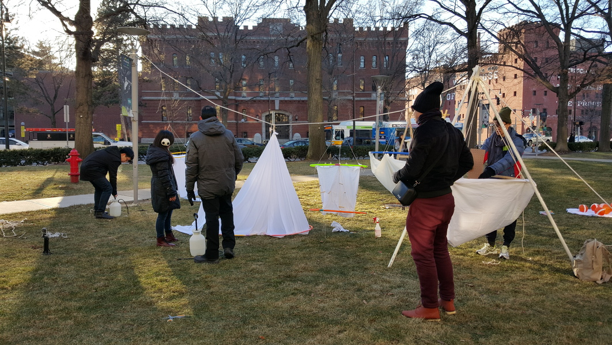Once the structures were frozen enough (and the sun had gone down), we carefully flipped each one. Because the cloth had been allowed to assume a natural curve under its weight while freezing, the shape of the turned-over structure had nicely distributed forces as well. The end structures were amazingly able to support themselves, even under the weight of the icicles that had formed!
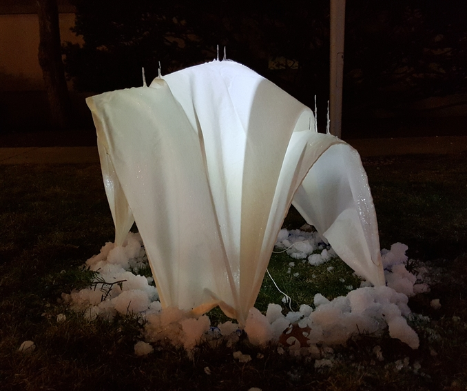 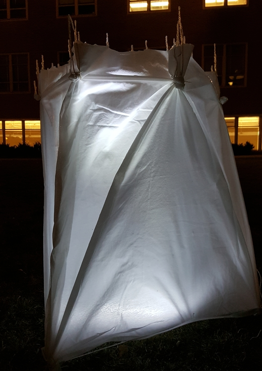The weather was too warm for water to freeze for the rest of the workshop, so we worked with a material that had a higher melting point: wax. The scale was much smaller, but we were still able to explore interesting and sometimes surprising shapes that could be created simply with gravity and suspension.
We worked by stretching the cloth out, bunching it together in places, and holding it in place with magnets and strings before we coated the cloth with melted wax. Then we would wait for the wax to harden before releasing the cloth to see if it could stand on its own.
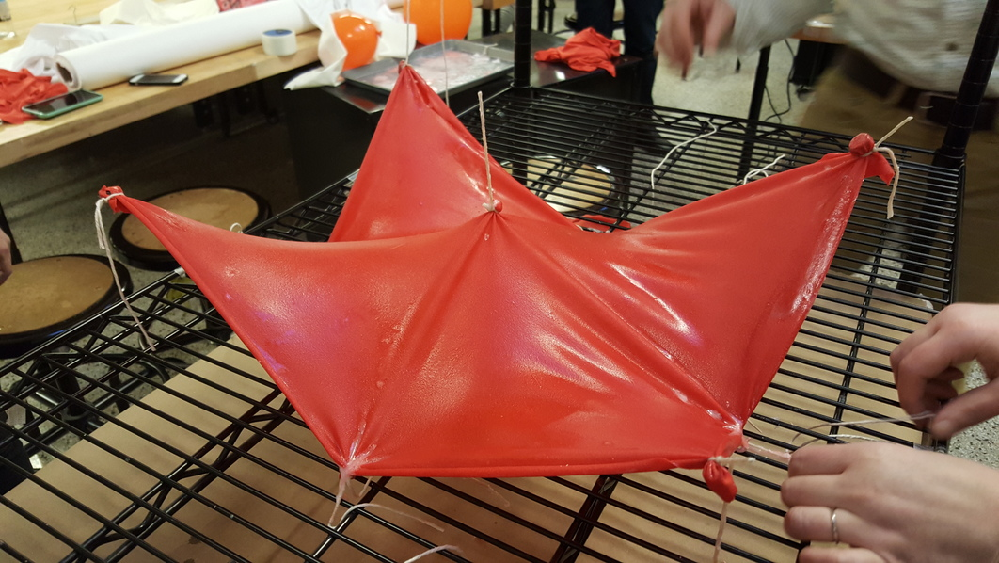 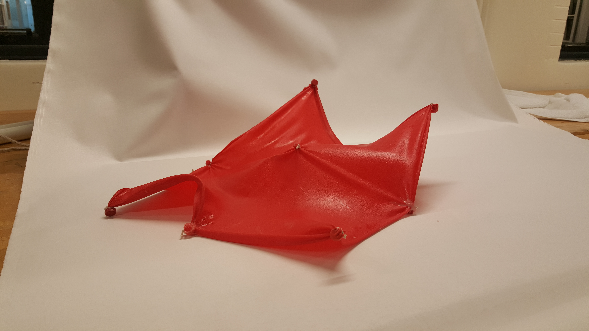I made the following two tent structures by tying strings to certain points on the cloth and then pulling the strings taut while applying wax to the cloth.
 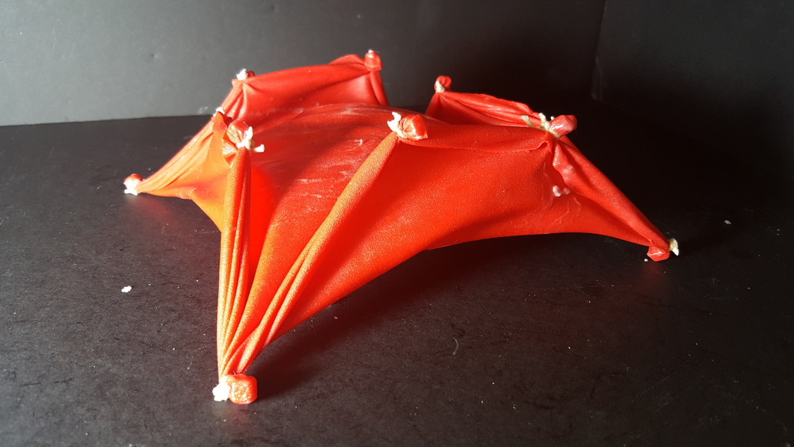
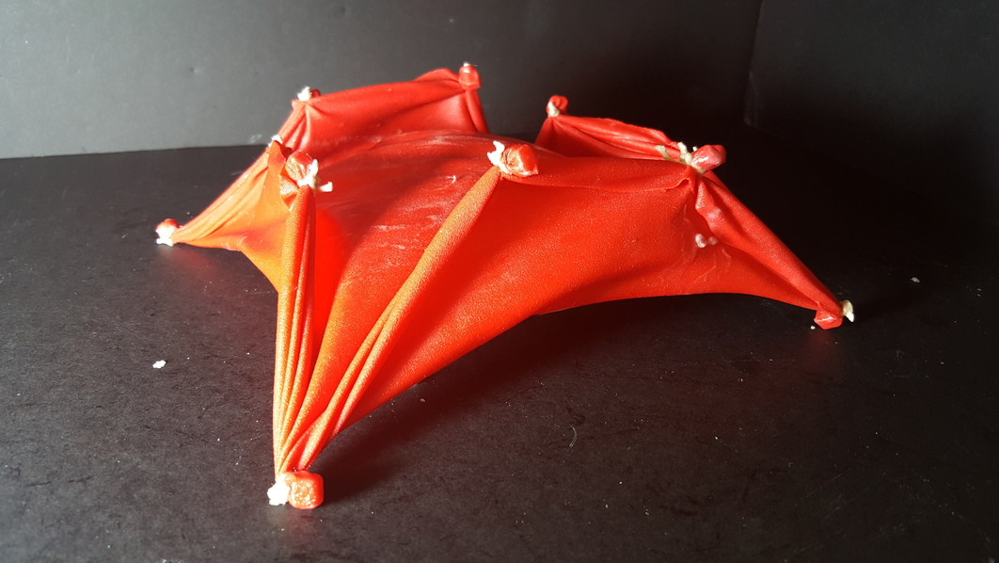
This tree was really fun to make. It is made of only rope, beads, and wax!
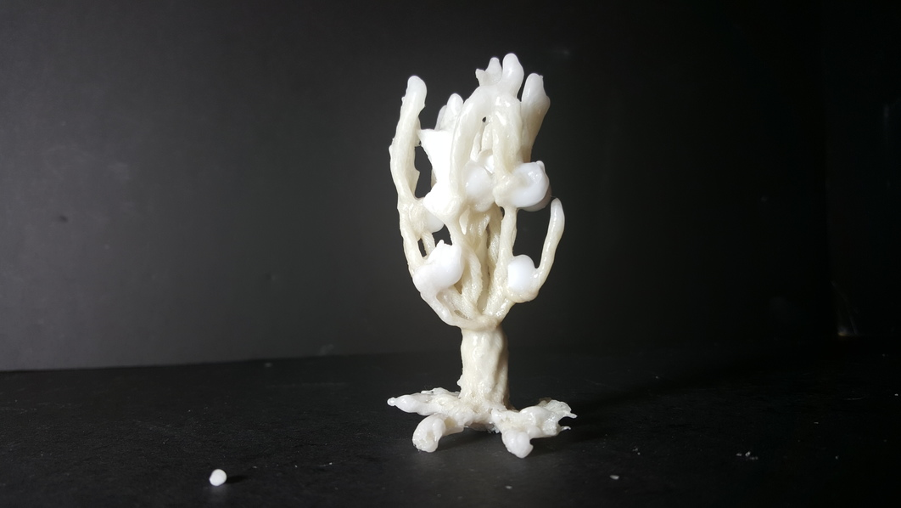 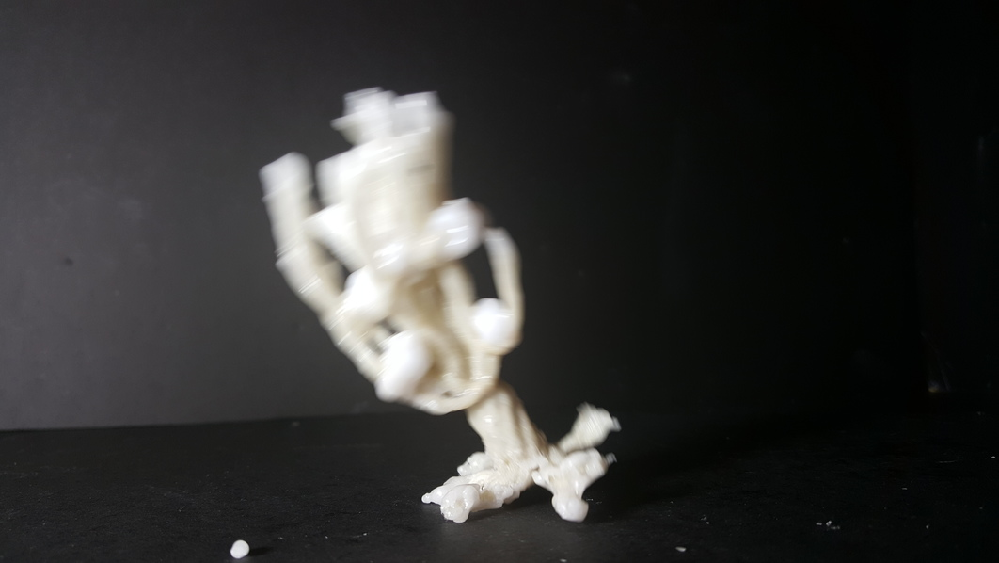This was my most adventurous creation. I was curious whether the string could support its own weight - it could! I had even added some beads in the latticework. The structure sagged only slightly over the course of 24 hours.
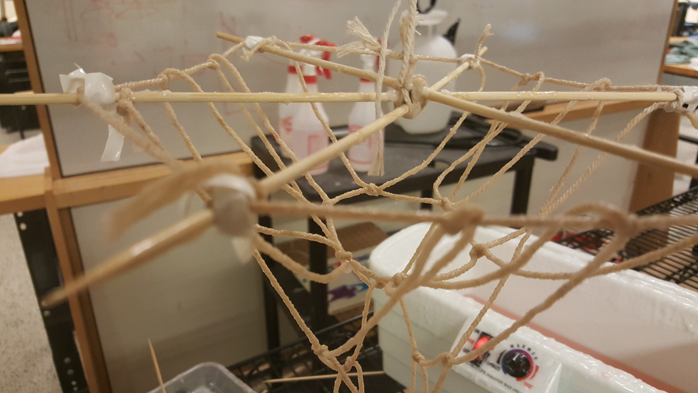 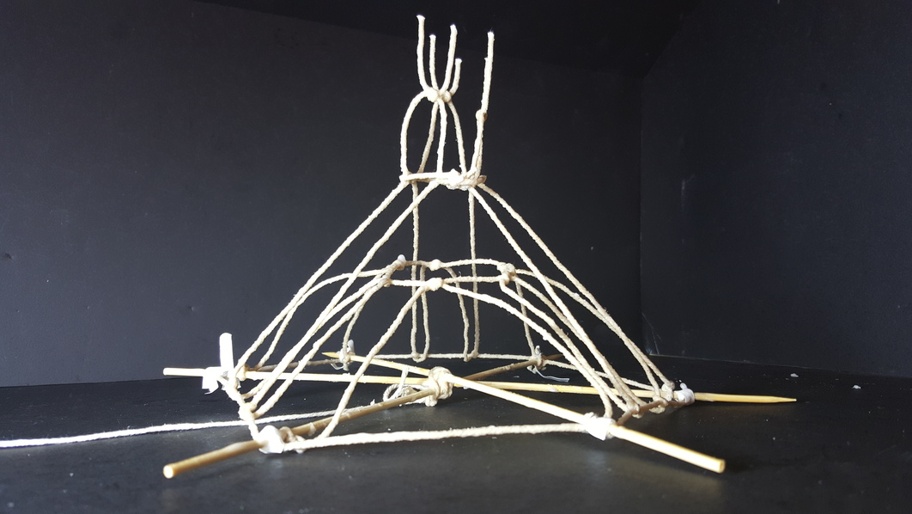Here's a lantern! Okay, we didn't use wax to generate the light; that's a phone flashlight. On the right is a cute holiday village we set up.
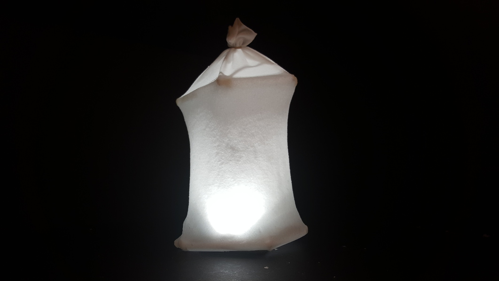 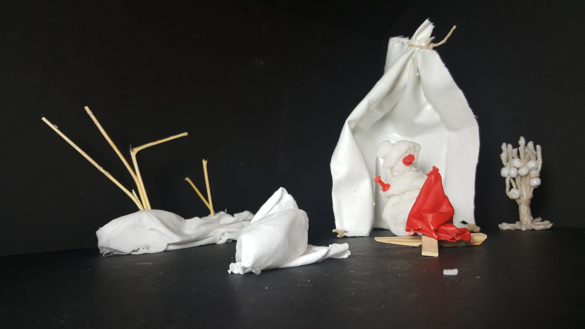Someone even made an egg out of wax! This was a lovely creation, no cloth involved. Perhaps you can guess how the result was achieved.
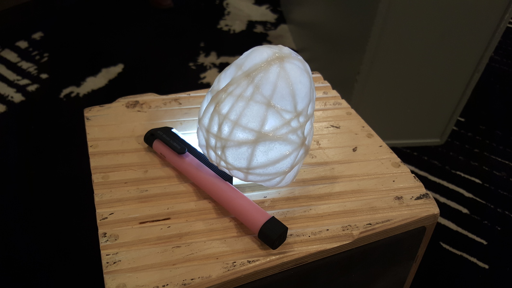The workshop was a great way to bring art into my MIT experience. I'd felt that most of my coursework had been lacking that freeplay, that invention and creation.
Volunteers in Finland have constructed an ice version of the Sagrada Familia, and others have created huge domes out of pykrete ice. Lancelot showed us a temporary structure made of ice and cloth in Canada. Residents of the area gathered beneath it to socialize and share a cup of coffee or two. I love the idea of such temporary structures, freer and not constrained by right angles, as an option in construction.